Страницы авторов "Тёмного леса"
Литературный Кисловодск и окрестности
Пишите нам! temnyjles@narod.ru
| 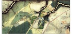 | Усадьба Черемушки-Троицкое на плане Москвы 1838 года |
Если усадьба Черемушки-Знаменское до сих пор вызывает восхищение ценителей искусства, то мало кто помнит о ее ныне не существующей соседке, носившей почти такое же имя, Черемушки-Троицкое - и имевшей общие с первой начальную историю и топонимические корни. Вторая часть названия - Троицкое - более поздняя и образована от церкви.
Территория, на которой возникла усадьба Черемушки-Троицкое на рубеже XVI-XVII веков, входила в состав вотчины Шаболово, принадлежавшей боярину Матвею Матвеевичу Годунову-Толстому (?-1639), четвероюродному брату царя Бориса Годунова. На просторах огромного поместья боярина{1} позднее возникли усадьбы Черемушки-Знаменское и Черемушки-Троицкое.
В 1605 году после вступления на царский престол Лжедмитрия Матвея Михайловича Годунова, попавшего в опалу, отправили на воеводство в Тюмень. Возможно, в связи с этим его подмосковные земли были приписаны к царским угодьям и в 1614 году пожалованы князю Богдану Федоровичу Долгорукову (1600(?)-1642){2}.
Северная часть имения - половина пустоши Черемушки (Черемошье), на которой впоследствии появилась усадьба Черемушки-Троицкое, в 1630-1631 годах отошла дворянину Афанасию Осиповичу Прончищеву (?-1660), владельцу соседнего поместья - усадьбы Елистратово, пустоши Козино на речке Котловке (Котле) и других земель. Якобы А.О. Прончищев обнаружил никому не принадлежавшую пустошь и донес властям об этом. Земля в 1629 году стала царской, а позднее ее продали тому же Прончищеву. Б.Ф. Долгоруков, утверждавший, что земля принадлежит ему, жаловался царю, но успеха не имел, лишившись Черемушек{3}.
При Прончищевых северная половина пустоши Черемушки не застраивалась. К 1646 году усадьба переносится из Елистратова в Козино, впоследствии получившее название Никольское (ныне территория Южного административного округа Москвы){4}.
После смерти А.О. Прончищева, прославившегося взяточничеством и другими злоупотреблениями во время воеводства в далеком городе Ваге (1635-1636), половину пустоши Черемушки, Никольское и другие владения унаследовал его сын дипломат Иван Афанасьевич Прончищев (?-1687), впоследствии окольничий, возглавлявший Приказы Большой Казны, Монастырский и Большого Прихода. В 1663 году он купил соседнюю вотчину Ртищевых - пустошь Коршуново (она же Карутино, Корутино или Селякино) на речке Коршунихе (названия явно владельческие) и пустошь Обводную между Коршунихой и речкой Котловкой (Котел). Эта покупка дала возможность напрямую соединить половину пустоши Черемушки и Никольское. В Коршунове строится новая усадьба - "двор вотчинников", значащаяся с 1678 года{5} (находилась примерно в районе пересечения современного Севастопольского проспекта и Коршунихи).
После смерти И.А. Прончищева треть Коршунова и Обводной достались его вдове Пелагее Ивановне Прончищевой. Все остальное унаследовали сыновья Петр (?-1700) и Михаил{6} (1651-1702) Ивановичи. Усадьба в Коршунове была ликвидирована (во всяком случае, в документах она больше не упоминается), деревня рядом с ней - упразднена между 1704 и 1709 годами.
Владельцы, очевидно, пользовались Никольским, в котором находились две усадьбы (по обе стороны реки), со временем перешедшие к детям - Ивану Петровичу Прончищеву (?-1710) и Дарье Михайловне Ржевской (1691-1759?){7}. На И.П. Прончищеве эта линия рода пресеклась. Принадлежавшие ему владения в полном составе стали значиться за Д.М. Ржевской.
| 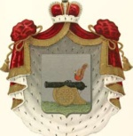 | Герб рода Ржевских |
Создателем усадьбы в Черемушках являлся муж Д.М. Ржевской - Александр Тимофеевич Ржевский (1691 - не ранее 1754). В прошении на имя императрицы Екатерины I (1726) он писал: "Служу я вашему императорскому величеству с 1700 году с начала свейской войны в регулярстве, и был в атаках под городами и в полезных потребах, о чем значит в поданных моих сказках от полков в военной коллегии, и прошел в армии от солдатства до маэорства. В 1722-м году по имянному блаженные и вечнодостойные памяти его императорского величества{8} указу за подписанием собственные его величества руки из маэоров из полку взят и определен в коллегию юстиции прокурором и с того числа безотлучно у того дела и в отпуску в доме не был. А в 705-м году мой отец убит в Астрахани{9}, и которые деревнишки мне достались, и как оные, так и другие, кои я имею, за незнаением моим их и за отлучением пришли во всеконечную гибель, отчего я пришел в разорение и имею болезни чечюйную{10} и головную, и глазом одним не вижу, и бываю в беспамятстве, и по данной мне должности положенного дела править за болезнями не могу"". А.Т. Ржевский умолчал о том, что как неправомерно произведенный в офицеры он в 1715 году был разжалован в рядовые и отправлен на службу в Семеновский полк{12}, однако, очевидно, сумел заново быстро выслужиться.
9 марта 1727 года императрица распорядилась дать А.Т. Ржевскому отпуск, а Верховный тайный совет постановил "прокурора Александра Ржевского <...> потом <...> определить в юстиц-коллегию в советники, понеже он к тем делам способен"{13}. 28 апреля 1730 года А.Т. Ржевский становится статским советником, а с 30 января 1736-го назначается президентом Вотчинной коллегии.
Есть основание полагать, что отпуск А.Т. Ржевского (1727-1728) ознаменовался, в частности, началом работ по созданию усадьбы Черемушки. Косвенное свидетельство тому - датируемое 1727 годом разрешение на реконструкцию церкви в соседнем имении Ржевских Никольском{14}, а также освящение в 1732 году в Черемушках кирпичной Троицкой церкви - небольшого квадратного в плане барочного храма с трехгранной алтарной апсидой. По церкви имение получило название - Троицкое, вскоре ставшее основным. Безусловно, исходатайствование разрешения на строительство, заказ проекта, заготовка материала и сами строительные работы заняли несколько лет. Кроме того, в 1732 году в Черемушках уже существовали два деревянных "помещиковых двора". Надо полагать, усадьба появилась раньше церкви, иначе разрешение на сооружение храма не было бы дано{15}.
Считается, что в 1742 году Черемушки-Троицкое было перешло к дочери Ржевских Дарье (Анне), на тот момент - супруге действительного статского советника князя Ивана Михайловича Одоевского (1702(1698)-1775), который, как и ее отец, возглавлял Вотчинную коллегию{16}. С 8 сентября 1732 года И.М. Одоевский состоял в коллегии советником и, несомненно, был вхож в дом своего начальника А.Т. Ржевского, что в результате привело к этому браку, ориентировочно состоявшемуся не позднее 1734 года. Московский дом И.М. Одоевского также находился в приходе церкви Спаса Нерукотворного Образа на Божедомке, скорее всего рядом с домом Ржевских, поскольку значится сразу же после него в исповедных ведомостях{17}.
Однако документы представляют историю Черемушек-Троицкого по-другому. Оказалось, Ржевские передали Д.А. Одоевской соседнее Никольское, а Черемушки-Троицкое сохранили за собой. После того как А.Т. Ржевского 29 мая 1741 года отправили в отставку с чином генерал-майора, надо полагать, обустройство усадьбы в Троицком продолжилось. Видимо, при нем здесь создается система из двух прудов, выкопанных на отроге безымянного оврага - притока реки Чуры. С юга по плотине между прудами к господскому дому вела дорога. Крестьянские избы стояли особняком юго-западнее усадьбы.
Дата смерти А.Т. Ржевского неизвестна. В исповедной ведомости Спасской церкви за 1754 год он еще упоминается. Вместе с ним жили жена и две дочери - Екатерина (1720-?) и Анастасия (1722-?), так и не вышедшие замуж{18}. Можно предположить, что Александр Тимофеевич умер в конце десятилетия, поскольку в 1759 году вместо него в документах по имению владелицей уже записана вдова Анна Михайловна Ржевская. Когда она скончалась - мы тоже не знаем. Во всяком случае, начиная с 1760 года хозяевами Троицкого-Черемушек значатся внуки Ржевских - братья князья Сергей (1735-1776){19} и Петр (1740-1826) Ивановичи Одоевские - гвардейские офицеры{20}.
Корнет Конногвардейского полка П.И. Одоевский 28 июня 1762 года принял участие в дворцовом перевороте, в результате которого был свергнут император Петр 111 и на престол взошла Екатерина II. Позже (1771) Петр, дослужившийся уже до ротмистра, перевелся в армию полковником и вышел в отставку (1777). Ему выпала нелегкая участь пережить всех своих близких - родителей, жену и детей. Оставшись один и располагая значительными денежными средствами, Одоевский обратился к благотворительности. В своем имении Болшево (Московский уезд) он организовал "убежище бедным". Другое имение - Ивановское в Подольском уезде, фамильную вотчину Одоевских - князь пожертвовал Императорскому Московскому человеколюбивому обществу в память о сыне, погибшем в 1813 году в битве под Лейпцигом. Эта организация погубила усадьбу, продав на слом все ее постройки, за исключением церкви-усыпальницы{21}.
С Черемушками-Троицким Одоевские расстались достаточно быстро. Уже в 1763 году владелицей этого имения является княгиня Софья Михайловна Бекович-Черкасская (1712-1778), жена полковника князя Александра (Большого) Александровича Бекович-Черкасского, потомка кабардинских князей{22}. Однако она владела Троицким еще меньше, чем Одоевские.
С 1764 года Черемушки-Троицкое принадлежало бывшему командиру галерного флота адмиралу Александру Ивановичу Головину (?-1766). От отца, И.М. Головина, ему достался огромный дом в Петербурге вблизи Зимней канавки, выстроенный по проекту архитектора Н.Ф. Гербеля. Там А.И. Головин устроил для своей матери церковь святого апостола Андрея Первозванного. Церковь просуществовала до смерти Александра Ивановича и переезда его вдовы Марии Ионишны, урожденной Новосильцевой (1716-1780?), унаследовавшей Троицкое-Черемушки и другие имения адмирала, в Москву{23}. "Тоже в свое время люди со значением", - вспоминала о Головиных старая москвичка Е.П. Янькова{24}.
Как минимум с 1785 года владельцем имения являлся внук М.И. Головиной Александр Николаевич Голицын (1769-1817){25}, впоследствии камергер. Не исключено, что перед ним Черемушки-Троицкое принадлежали дочери М.И. Головиной княгине Анне Александровне Голицыной (1732-1784?) владевшей соседним Никольским.
Пока А.Н. Голицын не достиг совершеннолетия, Троицким-Черемушками занимался его отец князь Николай Михайлович Голицын (1727-1787), обер-гофмаршал и тайный советник. От него юноше досталось огромное состояние, которое Александр умудрился промотать. По легенде, он даже собственную жену Марию Григорьевну, урожденную княжну Вяземскую (1772-1865), проиграл в карты графу Л.К. Разумовскому. Во всяком случае, Голицыны развелись (редкое событие по тем временам), а Л.К. Разумовский женился на Марии Григорьевне.
Под конец жизни А.М. Голицын окончательно разорился. Черемушки-Троицкое и Никольское в 1809 году были проданы коллежскому асессору и кавалеру Федору Анастасовичу Ардалионову. Нуждаясь в деньгах, тот заложил имение своей старшей дочери Елене Федоровне Андреевой (1778-1865), жене дворянина Николая Петровича Андреева (1773 - не позднее 1854), с 1811 года - обер-секретаря Сената, с 1834-го - председателя Московской гражданской палаты{26}.
История Троицкого-Черемушек во время Отечественной войны 1812 года связана с именем писателя И.И. Лажечникова, который поселился в этой усадьбе, романтически сбежав от родителей, чтобы поступить на военную службу. "Мы остановились в селении Троицком (имении моего товарища Ардал[ионова]), помнится, верстах в трех от Москвы. В доме нашли мы величайший беспорядок; казалось, неприятель только что оставил его. Зеркала были разбиты, фортепиано разломано, уцелевшее платье, в том числе и мальтийский мундир покойного помещика, которое не годилось в дело, валялось на полу"{27}. Заметим: "товарищ" Лажечникова Анастасий Федорович Ардалионов (1794-1831), впоследствии поручик, был не владельцем усадьбы, а его сыном{28}. "В Троицком прожили несколько дней; здесь, казалось, укрывался я в совершенной безопасности от поисков. Мы ездили раз в Москву посмотреть, что там делается. Народ с каждым днем прибывал в нее; строились против гостиного двора и на разных рынках балаганы и дощатые лавочки; торговля зашевелилась. Дымились на улицах кучи навоза, зажженные для ограждения от заразы мертвых тел". За это время родитель Лажечникова узнал о местоположении своего отпрыска. "Только что возвратились мы в Троицкое и собирались уже на другой день отправиться в главную квартиру армии (это было поздно вечером), как вбежал ко мне в комнату хозяин и объявил, что приехал мой отец. Не зная, что делать, я спрятался в людскую. <...> Но вскоре я услышал его голос, нежный, выходящий из любящей души: "Пускай покажется Ваня, - говорил он, - пускай придет; я его прощаю, я сам благословлю его на службу". Тут, не колеблясь ни минуты, бросился я в его объятия, целовал его руки, обливал их слезами. С груди моей свалился камень. Это была одна из счастливейших минут моей жизни".
| 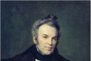 | |
| А.В. Тыранов. Портрет И.И. Лажечникова. Холст, масло. 1834 год. Всероссийский музей А.С. Пушкина (Санк-Петербург) |
В 1812 году в имении появились первые кирпичные заводы, хозяева которых арендовали тут землю. В 1816-м таких заводов уже было четыре. К тому времени Ф.А. Ардальонов умер, и Черемушки-Троицкое формально принадлежало его несовершеннолетним детям. Вернуть долг Е.Ф. Андреевой он не успел, что и определило дальнейшую судьбу имения, в 1817 году выставленного на публичные торги. Однако покупателей не нашлось, поэтому Е.Ф. Андреева официально стала владелицей Троицкого (1821){29}. Ее фамилия дала еще одно название сему месту - "Троицкое-Андреево" (на некоторых картах Московской губернии это название ошибочно отнесено к усадьбе Троицкое на Теплых Станах).
В связи с утверждением имения за Е.Ф. Андреевой было составлено описание усадьбы, очевидно, мало изменившейся с 1812 года. По-прежнему существовал деревянный обшитый тесом больший господский дом на каменном фундаменте. Он имел три крыльца, балкон с колоннами, кроме того, еще один балкон украшал мезонин. Наличие колонн (по-видимому, портика) позволяет считать здание относящимся к классицистической эпохе, то есть возникшим во второй половине XVIII века - скорее всего, при Голицыных. Прудовая система расширилась: больших прудов было уже четыре (позднее пруд у церкви назывался Троицким, или Поповским, так как на его берегу стоял дом священника, самый мелкий пруд, где купались дети, - Лягушатником, центральные пруды - Циклопником, по обилию рачков-циклопов, и Рыбным - последние названия, очевидно, советского периода). Усадебный парк состоял из двух частей - пейзажной (к югу от господского дома, между ним и прудами) и регулярной (к северу). Перед регулярной частью парка слева и справа от дома находились каменные оранжереи (67 персиковых деревьев и 50 абрикосовых). Особняком стоял жилой флигель с кухней и людской. Еще один жилой флигель располагался "на прудах" южнее дома. Кроме того, имелись два каретных сарая и амбар. Колокольня при храме и церковная ограда были деревянными{30}.
На карте Москвы 1838 года восточнее усадьбы показана хозяйственная зона с П-образным конным двором, каретными сараями и другими постройками. Севернее находился кирпичный завод. Также кирпичные заводы мы видим к востоку от усадьбы по другую сторону дороги из Москвы в Черемушки-Знаменское (позднее Якунчиковское шоссе, ныне Большая Черемушкинская улица). На карте Московской губернии 1848 года обозначен еще один кирпичный завод между хозяйственной зоной усадьбы и дорогой в Черемушки-Знаменское.
Е.Ф. Андреева постоянно жила в Черемушках-Троицком - за отсутствием у нее городского дома, в отличие от подавляющего большинства подмосковных помещиков и помещиц (в Московском уезде тогда, помимо Е.Ф. Андреевой, лишь полковница А.И. Карелина безвыездно проживала в своем сельце Трубицыне){31}. Впоследствии имение перешло к дочерям Елены Федоровны - девицам Анне (1811-1870) и Ольге (1828-1884) Николаевнам Андреевым{32}. Позднее Черемушки-Троицкое унаследовал один из их племянников - статский советник Николай Михайлович Андреев (1839 - не ранее 1906){33}.
Фамилия Андреевы является одной из самых распространенных в России, что затрудняет поиск мемуарных источников об отдельных ее представителях. Тем не менее, нам удалось обнаружить воспоминания Ф.В. Шлиппе, в которых фигурирует владелец Черемушек-Троицкого Н.М. Андреев, бывший на тот момент председателем Верейской уездной земской управы и соседом Ф.В. Шлиппе по имению (в Верейском уезде Андрееву принадлежала усадьба Таширово, а Шлиппе - Быкасово). Автор воспоминаний характеризует Николая Михайловича как человека умного и доброго, но невероятного скупого{34}.
| 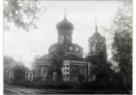 | Троицкая церковь. Фотография А. Лебедева. 1935 год. Из фондов Государственного музея архитектуры имени А.В. Щусева |
Видимо, при Н.М. Андрееве в Черемушках-Троицком установили белый камень с надписью: "Блажен путь с миром идущим. 1889"{35} - скорее всего, у дороги, проходящей по дамбе между прудами.
Весной 1897 года усадебную церковь по поручению Московского археологического общества обследовал городской архитектор академик Сергей Устинович Соловьев (1859-1913). Вывод: здание не интересно "ни в археологическом, ни в художественном отношении". Поэтому местный священник и церковный староста получили разрешение церковь снести, что и произошло в 1897-1898 годах{36}. Вместо нее в Черемушках-Троицком на пожертвования московского купца 2-й гильдии Степана Ивановича Тихонова был построен эклектичный одноглавый Троицкий храм, верх которого с очень мощной главой, стилизованный под XVI-XVII века, имитировал позакомарное покрытие. Наиболее вероятный аналог этого обращения к историзму - расположенная не очень далеко отсюда церковь в усадьбе Богородское-Воронино, однако нельзя исключить использования мотивов ранее существовавшего в Черемушках-Троицком храма. Так или иначе, в результате получился архитектурный курьез - здание с несочетаемыми между собой верхом и низом.
Судя по картам, новую церковь возвели на месте старой. Ее окружало кладбище, где, в частности, были похоронены за алтарем один из настоятелей священник Иоанн Архангельский (1814-1887) и его сын Сергий Архангельский (1841-1888) - диякон церкви Седьмого Вселенского собора на Девичьем поле в Москве{37}.
Еще один владелец Черемушек-Троицкого - племянник предыдущего Николай Аркадьевич Андреев (1870 - не позднее 1914){38}. Он получил имение уже в 1903 году, то есть еще при жизни дяди. Вместе с крестьянином Михаилом Григорьевичем Скомороховым Н.А. Андреев купил кирпичный завод В.И. Якунчикова, бывший Г.А. Юдина, находившийся к востоку от Якунчиковского шоссе (ныне Большая Черемушкинская улица).
В 1904 году восточнее церкви у пересечения подъездов к ней со стороны Якунчиковского шоссе было построено Троицко-Черемушковское земское училище (в советское время - школа; по ней со временем подъезды получили название 1-го и 2-го Школьных переулков. Траектория 1-го Школьного переулка, превратившегося в безымянный проезд, сохранилась до наших дней).
Незадолго до Первой мировой войны над входом в церковь соорудили колокольню, выполненную в неоклассическом стиле{39}. Возможно, тогда же появилась и церковная кирпичная ограда с металлическими решетками.
В 1914 году Н.А. Андреева уже не было в живых. Видимо, имение унаследовала его вдова Елизавета Васильевна, урожденная Слепцова{40}.
| 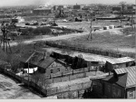 | Справа на заднем плане - флигель, пруды и церковь. Слева и на переднем плане - село Черемушки-Троицкое. Дорога на переднем плане - улица Телевидения (ныне - Шверника). 1958 год |
| 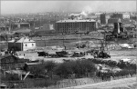 | |
| 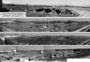 | Панорамы от улицы Телевидения (ныне Шверника). Церковь Троицы (справа). Фотографии 1962 года |
| 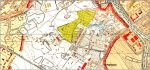 | План Москвы Мосгеотреста 1952 года |
| 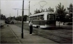 | Большая Черемушкинская улица. Фотография 1957 года |
| 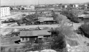 |
| 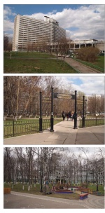 | Современная застройка бывшей усадебной территории: дом аспирантов и стажеров МГУ имени М.В. Ломоносова, жилые дома, школа, церковь Живоначальной Троицы в Старых Черемушках. Фотографии автора. 2014 год |
| 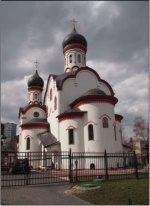 |
После революции в Черемушках-Троицком организуется совхоз комендантского управления Московского гарнизона. Камень с надписью как еще существующий отметил писатель Петр Петрович Перцов (1868-1947) в своей работе "Подмосковные экскурсии" (1924){41}. Очевидно, вскоре после этого камень ликвидировали, поскольку более поздние исследователи его не упоминают.
Усадьба, судя по всему, погибла в 1920-х годах. На карте Москвы и окрестностей 1931 года место, где она находилась, обозначено словом "дачи". Тогда в Троицком-Черемушках возник колхоз имени Сталина, и часть бывших усадебных земель отвели под парники. В 1935 году Троицкая церковь была закрыта и передана Тресту соевой промышленности Наркомпищепрома СССР (Союзпромсоя).
Карта Мосгеотреста 1952 года более подробна. Здесь на месте господского дома показаны две отдельно стоящие постройки, примерно повторяющие его конфигурацию, то есть либо дом сильно пострадал и "разделился" надвое, либо был заменен новыми сооружениями, поставленными на его фундаменте. Оранжерей, конного двора и прочего уже нет. На территории регулярной части парка стоят поздние постройки, принадлежавшие колхозу имени Молотова, созданному в 1950 году путем объединения колхоза Черемушек-Троицкого с соседними села Зюзино (колхоз имени 9 Января) и деревни Волхонка ("Возрождение"){42}. Видимо, единственными уцелевшими к тому времени историческими зданиями в Черемушках-Троицком являлись церковь, переданная в 1956 году спортартели, и кирпичный флигель "на прудах" - одноэтажный, декорированный пилястрами, с высоким цокольным этажом: они видны на архивных фотографиях 1958-1963 годов.
В 1958 году колхоз имени Молотова, земли которого вошли в городскую черту, стал частью колхоза "Сталинский путь", подчиненного Сосенскому сельсовету вновь образованного Ульяновского района лесопаркового защитного пояса Москвы. В январе 1962 года, незадолго до упразднения, "Сталинский путь" переименовали в "Родину".
В 1961-1962 годах территория усадьбы была полностью перепланирована, а пруды засыпаны. Здесь вырос 10-й квартал Новых Черемушек, в одном из несохранившихся пятиэтажных домов которого родился и жил В.С. Высоцкий (улица Шверника, 11, корпус 4, он же корпус 8 10-го квартала).
Церковь, остатки кладбища и флигель исчезли в 1963 году. В 1964-м на месте господского дома открылась средняя школа (ныне гимназия) N625 (улица Шверника, 17, корпус 2). Считается, что участок, где располагалось кладбище, вошел в состав территории дома аспиранта и стажера (ДАС) - знаменитого студенческого общежития Московского государственного университета, открытого в 1971 году (улица Шверника, 19; комплекс из двух 17-этажных корпусов, соединенных переходом, - оригинальный образец архитектуры модернизма (архитекторы: Н.А. Остерман, А.В. Петрушкова, И.Н. Канаева, Г.Д. Константиновский, Г.Н. Карлсен; конструкторы: С.И. Керштейн, В.Н. Шапиро, А.В. Хорева). Однако кладбище и церковь находились по соседству - на месте первого в Москве (1964) 9-этажного панельного дома серии П-49 (Большая Черемушкинская улица, 2, корпус 1). Проезд вдоль него - это и есть бывший 1-й Школьный переулок.
Рядом с ДАС на месте Поповского пруда устроили большую бетонную трехступенчатую чашу. Ее обычно воспринимают как пересохший искусственный бассейн. На самом деле это - кострище, где проводились вечера дружбы с иностранными студентами. Последние десятилетия оно не использовалось и перед строительством новой Троицкой церкви в 2003-2007 годах было ликвидировано. Хотя считается, что церковь поставлена на месте предыдущей, в действительности она оказалась западнее, на территории Поповского пруда (улица Шверника, 17, корпус 2).
{1} РГДЦА.Ф. 1209. On. 1. Д. 33089. Л. 9-202.
{2} Там же. Л. 174.
{3} Там же. Л. 168; Чусова М.А. Московские Черемушки в XVII веке: все началось с "пустоши Черемошье"... Московский журнал. 2013. N9. С. 56-70.
{4} РГАДА.Ф. 1209. On. 1. Д. 9809. Л. 542 об,-543 об.; Холмогоровы В.И. и Г.И. Исторические материалы о церквах и селах XVI-XVIII столетия. Вып. 8. Пехрянская десятина (Московского уезда). М., 1892. С. 106.
{5} РГАДА.Ф. 1209. Оп. 1. Д. 32895. Л. 52-65; Д. 32902. Л. 146.
{6} Был женат на Екатерине Богдановне Иванчиной-Писаревой.
{7} Холмогоровы В.И. и Г.И. Указ соч. С. 107.
{8} Имеется в виду Петр I. Подписанный им указ о назначении А.Т. Ржевского прокурором Юстиц-коллегии датирован 17 апреля 1722 г.
{9} Тимофей Иванович Ржевский (ок. 1640-1705), стольник и Астраханский воевода, убит взбунтовавшимися стрельцами. В 1701-1705 гг. А.Т. Ржевский состоял при отце в Астрахани.
{10} Геморрой.
{11} Протокол Верховного тайного совета 9 марта 1727 г. //Сборник Императорского русского исторического общества. Т. 63. СПб., 1888. С. 232.
{12} РГВИА.Ф. 2583. Оп. 1. Д. 25. Л. 9.
{13} Журнал Верховного тайного совета 9 марта 1727 г. //Сборник Императорского русского исторического общества. Т. 63. С. 231.
{14} Холмогоровы В.И. и Г.И. Указ. соч. С. 107.
{15} Дело о получении в наследство князем Петром Ивановичем Прозоровским от деда своего Ф.Ф. Лихачева сельца Черемошки в 1666 году / Голицын М.М. Петровское. М., 1912. С. 109; Холмогоровы В.И. и Г.И. Указ. соч. С. 157-161, 191, 192.
{16} Холмогоровы В.И. и Г.И. Указ. соч. С. 192; Долгоруков П. Российский родословный сборник. Т. 1. СПб., 1840. С. 23.
{17} ЦИАМ.Ф. 203. Оп. 747. Д. 208. Л. 125.
{18}Там же. Л. 121 об.
{19} С.И. Одоевский согласно исповедным ведомостям (ЦИАМ.Ф. 203. Оп. 747. Д. 208. Л. 125) родился в 1735 г. Другая дата - 1729 г., т.к. якобы он умер в 47 лет 16 апреля 1776 г. (см.: Русский провинциальный некрополь. Т. 1. СПб., 1914. С. 634) - нам видится недостоверной.
{20} РГАДА.Ф. 1320. Оп. 1 Ч. 1. Д. 930.
{21} Коробко М.Ю. Троицкое-Черемушки (Троицкое-Андреево) / Усадебное ожерелье Юго-Запада Москвы. М., 1997.; Шеппинг Д.О. Древний Сосенский стан. М., 1895. С. 34. В Ивановском, кроме брата П.И. Одоевского - С.И. Одоевского, также был похоронен их отец, Иван Ми хайлович Одоевский, и дед - ближний стольник, гвардии подполковник и командующий дивизией князь Михаил Юрьевич Одоевский (1671-1743) со своей первой женой Дарьей Матвеевной (1676-1749), урожденной Милославской (см.: Русский провинциальный некрополь. Т. 1. С. 634).
{22} РГАДА.Ф. 1320. Оп. 1. Д. 749. С.М. Бекович-Черкасская и ее муж похоронены в Донском монастыре.
{23} Там же. Ф. 1354. Оп. 276. Д. б "С"; Ф. 1355. Оп. 1. Д. 775. Л. 45; Кусов В.С. Земли Московской губернии в XVIII веке. Описание землевладений. Т. 2. М., 2004. С. 107; Сытин П.В. История планировки и застройки Москвы. Т. 2. М., 1954. С. 506.
{24} Рассказы бабушки: Л., 1989. С. 42.
{25} РГАДА.Ф. 1354. Оп. 256. Ч. 1. Л. 19; Ф. 1356. Оп. 1. Д. 2358. Л. 1; Ф. 1263. Оп. 10. Д. 2511. Л. 1; ЦИАМ.Ф. 203. Оп. 745. Д. 977. Л. 241; Ф. 454. Оп. 4. Д. 16. Л. 122; Голицын Н.Н. Род князей Голицыных. Т. 1. СПб.,1892. С. 139, 154-155.
{26}ЦИАМ.Ф. 203. Оп. 745. Д. 1022а. Л. 235; Московский некрополь. Т. 1. СПб., 1907. С. 35; Родословная книга дворянства Мос ковской губернии. Т. 1. Дворянство жалованное и выслуженное. А-И.М., [1914]. С. 36. Этот брак состоялся в 1809 г. У Андреевых было пятеро сыновей и восемь дочерей.
{27} Здесь и далее цит. по: Лажечников И.И. Новобранец 1812 года / Полн. собр. соч. Т. 1. М., 1901. С. 181-182.
{28} Московский некрополь. Т. 1. С. 53.
{29} ЦИАМ.Ф. 14. Оп. 1. Д. 169. Л. 275-276.
{30} Там же.
{31} Нистрем К. Указатель селений и жителей уездов Московской губернии. М., 1852. С. 5, 81.
{32} ЦИАМ.Ф. 210. Оп. 11. Д. 2760. Л. 47; Земская окладная книга Московского уезда. М., 1873. С. 78-79.; Справочная книжка Московской губернии (описание уездов), составленная по официальным сведениям управляющим канцелярией московского губернатора Шрамченко. М., 1890. С. 32.
{33} Памятная книжка Московской губернии на 1899 год. М., 1899. С. 484.
{34} Шлиппе Ф.В. Автобиографические записки. 1941-1946 гг. / Российский архив. История Отечества в свидетельствах и документах XVIII-XX вв. Новая серия. М., 2008. С. 60, 79, 83.
{35} Перцов П.П. Подмосковные экскурсии. Трамвайные поездки. М., 1924. С. 46.
{36} ЦИАМ.Ф. 453. Оп. З.Д. 79. Л. 147; Протоколы Комиссии по сохранению древних памятников за 1896-1899 гг. / Древности. Труды Императорского Мос ковского археологического общества. Т. 18. М., 1901. С. 222-224.
{37} Русский провинциальный некрополь. Т. 1. С. 53-54.
{38} Населенные местности Московской губернии. М., 1913. С. 40; Родословная книга дворянства Московской губернии. Т. 1: А И.С. 37.
{39} ОПИ ГИМ.Ф. 402. Ед. хр. 10. Л. 32; Коробко М.Ю. Троицкое-Черемушки (Троицкое-Андреево) / Усадебное ожерелье Юго-Запада Москвы. М., 1997.
{40} Населенные местности Московской губернии. С. 153.
{41} Перцов П.П. Указ. соч. С. 46.
{42} ЦГАМО.Ф. 7250. Оп. 1. Д. 696.
Последнее изменение страницы 13 Mar 2019
{kind=link}
{kind=link}
{kind=link}
{kind=link}
{kind=link}
{kind=link}
{kind=link}
{kind=link}
{kind=link}
{kind=link}
{kind=link}
{kind=link}
{kind=link}